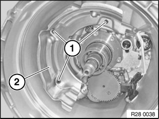
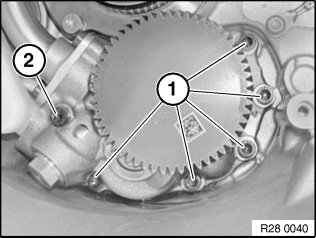
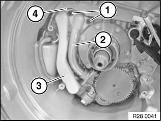
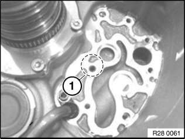
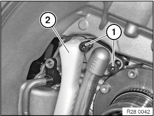
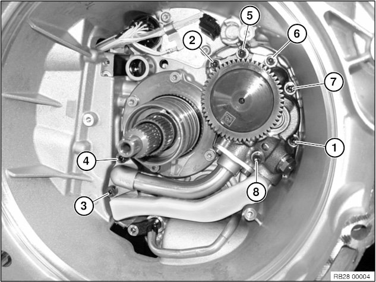

<!DOCTYPE html>
<html>
  <head>
    <title>Hydraulic Pump: Service and Repair — 2011 BMW 128i Coupe (E82) L6-3.0L (N52K) Service Manual | Operation CHARM</title>
    <meta name='description' content="Detailed repair manual for the 2011 BMW 128i Coupe (E82) L6-3.0L (N52K).">
    <link rel='stylesheet' href="../style.css">
    <meta name='viewport' content='width=device-width, initial-scale=1.0' />
  </head>
  <body>
    <div class='theme-colors header'>
      <div class='branding'><b>Operation CHARM</b>: Car repair manuals for everyone.</div>
<div class=breadcrumbs><a class='breadcrumb-part' href="../">Home</a> <b>&gt;&gt;</b> <a class='breadcrumb-part' href="../BMW/">BMW</a> <b>&gt;&gt;</b> <a class='breadcrumb-part' href="../BMW/2011/">2011</a> <b>&gt;&gt;</b> <a class='breadcrumb-part' href="../index.html">128i Coupe (E82) L6-3.0L (N52K)</a> <b>&gt;&gt;</b> <a class='breadcrumb-part' href="0.html">Repair and Diagnosis</a> <b>&gt;&gt;</b> <a class='breadcrumb-part' href="0.html#Transmission%20and%20Drivetrain/">Transmission and Drivetrain</a> <b>&gt;&gt;</b> <a class='breadcrumb-part' href="0.html#Transmission%20and%20Drivetrain/Automatically%20Shifted%20Manual%20Transmission%2FTransaxle/">Automatically Shifted Manual Transmission/Transaxle</a> <b>&gt;&gt;</b> <a class='breadcrumb-part' href="0.html#Transmission%20and%20Drivetrain/Automatically%20Shifted%20Manual%20Transmission%2FTransaxle/Shift%20Actuator/">Shift Actuator</a> <b>&gt;&gt;</b> <a class='breadcrumb-part' href="1118.html">Hydraulic Pump</a> <b>&gt;&gt;</b> <a class='breadcrumb-part' href="10176.html">Service and Repair</a></div></div>
<div class="theme-colors floaty-message lemon-message">
  <b style="font-size: 1.5em; color: gold">Manuals through 2025 now available!</b>
  <br><br>
  Our trusted friends have launched a new website named LEMON, which has newer manuals. It also contains all the CHARM manuals.
  <br><br>
  LEMON is the spiritual successor to  CHARM, I recommend you try it!
  <br><br>
  Link: <a style='white-space: nowrap' href="../missing-page">lemon-manuals.la</a> or <a style='white-space: nowrap' href="../missing-page">lemon-manuals.org.ua</a>
  <br><br>
  (Some people have issue connecting. LEMON is investigating. For now, use Firefox or change your DNS server)
  <br><br>
  Or, hide this message: <a href="../missing-page">temporarily</a> or <a href="../missing-page">permanently</a>
</div>
<div class='main'>
<h1>Hydraulic Pump: Service and Repair</h1><b>28 10 010 Removing and installing or replacing pump unit (GS7D36SG)</b><br><br><div class='oxe-image'></div><br><br><br><br><span class='indent-2'>&#09;</span><b>Important!</b><br><span class='indent-5'>&#09;</span>After completion of work, check gearbox oil level.<br><span class='indent-5'>&#09;</span>Use only the approved transmission oil.<br><span class='indent-5'>&#09;</span>Failure to comply with this instruction will result in serious damage to the twin-clutch gearbox.<br><br><div class='oxe-image'></div><br><br><br><br><span class='indent-2'>&#09;</span><b>Important!</b><br><span class='indent-5'>&#09;</span>Read and comply with notes on protection against electrostatic damage (ESD protection).<br><br><div class='oxe-image'></div><br><br><br><br><span class='indent-2'>&#09;</span><b>Necessary preliminary work:</b> <br><span class='indent-2'>&#09;</span>^<span class='indent-5'>&#09;</span>Remove twin-clutch gearbox<br><span class='indent-2'>&#09;</span>^<span class='indent-5'>&#09;</span>Remove clutch<br><br><div class='oxe-image'></div><br><br><br><br><span class='indent-2'>&#09;</span>Release screws (1).<br><br><span class='indent-2'>&#09;</span>Tightening torque 28 10 7AZ.<br><br><span class='indent-2'>&#09;</span>Remove oil separator (2).<br><br><div class='oxe-image'></div><br><br><br><br><span class='indent-2'>&#09;</span>Release screw (1).<br><br><span class='indent-2'>&#09;</span>Tightening torque 28 10 6AZ.<br><br><span class='indent-2'>&#09;</span>Disconnect connector (3).<br><br><span class='indent-2'>&#09;</span>Release combination sensor (2) from housing.<br><br><div class='oxe-image'></div><br><br><br><br><span class='indent-2'>&#09;</span>Release screws (1) and (2).<br><br><span class='indent-2'>&#09;</span>Tightening torque 28 10 8AZ.<br><br><span class='indent-2'>&#09;</span><b>Installation note:</b><br><span class='indent-2'>&#09;</span>Observe installation position and screw length.<br><br><span class='indent-2'>&#09;</span>Replace sealing washer on screw (2).<br><br><div class='oxe-image'></div><br><br><br><br><span class='indent-2'>&#09;</span>Release screws (1).<br><br><span class='indent-2'>&#09;</span>Tightening torque 28 10 9AZ.<br><br><span class='indent-2'>&#09;</span>Release oil pump with pressure pipe (2) and return line (3) from housing.<br><br><span class='indent-2'>&#09;</span><b>Installation note:</b><br><span class='indent-2'>&#09;</span>Replace flat seal (4).<br><br><span class='indent-2'>&#09;</span>During reinstallation O-ring remains on return line.<br><br><br><span class='indent-2'>&#09;</span><b>Important!</b><br><span class='indent-5'>&#09;</span>The pressure pipe must not be detached from the pump.<br><br><div class='oxe-image'></div><br><br><br><br><span class='indent-2'>&#09;</span><b>Important!</b><br><span class='indent-5'>&#09;</span>Before installing oil pump:<br><span class='indent-5'>&#09;</span>Depending on version, there is a bore hole and a recess for the O- ring (1).<br><br><span class='indent-2'>&#09;</span>If the bore hole is present, attention must be paid to ensuring the O-ring (1) is in the right installation position and correctly seated behind the pump.<br><br><div class='oxe-image'></div><br><br><br><br><span class='indent-2'>&#09;</span><b>Important!</b><br><span class='indent-5'>&#09;</span>Installation sequence, oil pump:<br><span class='indent-5'>&#09;</span>1.<span class='indent-8'>&#09;</span>Moisten O-ring with transmission oil<br><span class='indent-5'>&#09;</span>2.<span class='indent-8'>&#09;</span>Position pump in transmission using centering sleeves.<br><span class='indent-5'>&#09;</span>3.<span class='indent-8'>&#09;</span>Gently insert screws (1) with pressure pipe<br><span class='indent-5'>&#09;</span>4.<span class='indent-8'>&#09;</span>Press in return line (2) until it audibly snaps into place<br><span class='indent-5'>&#09;</span>5.<span class='indent-8'>&#09;</span>Screw in oil pump<br><span class='indent-5'>&#09;</span>6.<span class='indent-8'>&#09;</span>The tightening sequence from 1-8 is mandatory<br><br><span class='indent-2'>&#09;</span><b>Installation note:</b><br><span class='indent-2'>&#09;</span>Centering sleeves must not be damaged or crushed.<br><br><div class='oxe-image'></div><br><br><br><br><span class='indent-2'>&#09;</span><b>Important!</b><br><span class='indent-5'>&#09;</span>Tightening sequence for oil pump:<br><span class='indent-5'>&#09;</span>1.<span class='indent-8'>&#09;</span>Position 1 - 8 to final torque<br><span class='indent-5'>&#09;</span>2.<span class='indent-8'>&#09;</span>Position: 1, undo once again and to final torque<br><span class='indent-5'>&#09;</span>3.<span class='indent-8'>&#09;</span>Position: 1, 2, 5, 6, 7, 8 tightening torque 28 10 8AZ<br><span class='indent-5'>&#09;</span>4.<span class='indent-8'>&#09;</span>Position: 3, 4 tightening torque 28 10 9AZ<br><br><h3>���:</h3><div class='oxe-image'></div><br><br><br></div>
<div class="theme-colors footer">
  <i>pro multis</i> · <a href="../about.html">About Operation CHARM</a>
</div>
<script src="../script.js"></script>
</body>
</html>
